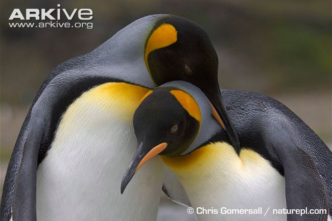
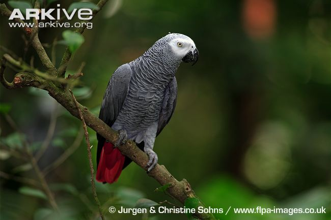
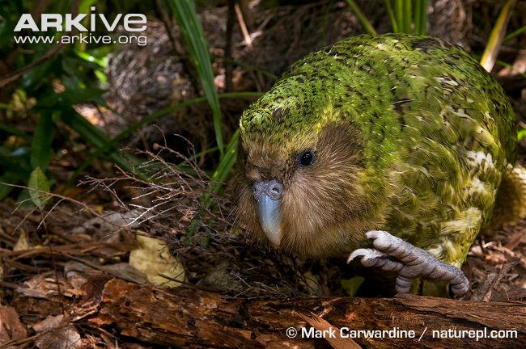
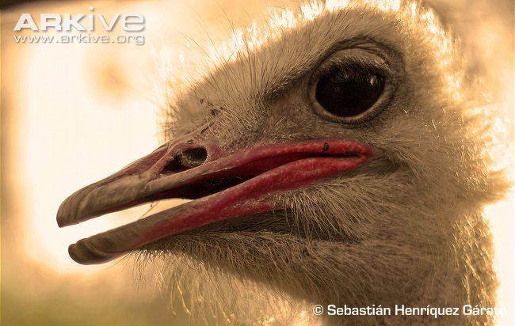

Popular Birds

King penguin
- The king penguin chick looks so different to the adult that they were first described as a completely different species altogether.
- While widely spread in the southern ocean you’ll never find a king penguin on pack ice, that is left to its close relative the emperor penguin.
- King penguins are excellent divers and have been known to dive as deep as 300 metres!

African grey parrot
- The African grey parrot (Psittacus erithacus) is famous for its intelligence and ability to mimic human speech, making it one of the most popular of all avian pets
- One of the largest parrots in Africa
- the African grey parrot has pale grey plumage, with whitish edges to the feathers on the head and neck, which give a lacy or ‘scalloped’ appearance
- Both male and female African grey parrots are similar in appearance, while juveniles can be recognised by a dark grey or black eye, grey-tinged undertail-coverts and a darker red tip to the tail

Kakapo
- The kakapo is the world's only flightless parrot and is also unusual in being nocturnal
- The kakapo is also the world's heaviest parrot.
- The male kakapo produces a strange 'boom' call to attract potential mates, which can be heard up to 5 kilometres away.
- The kakapo does not reach sexual maturity until 9 to 10 years of age, and it only breeds every 2 to 5 years.

Ostrich
- The distinctive ostrich is the heaviest of all living birds, and it has the biggest eyes of any land animal!s away.
- The kakapo does not reach sexual maturity until 9 to 10 years of age, and it only breeds every 2 to 5 years.The ostrich is the only bird to have just 2 toes, one of which has a formidible 10 cm long claw!
- The ostrich has been known to make a 'booming' call, which can resemble the roar of a lion
- Despite being flightless, the ostrich can run up to 70 km per hour, making it the fastest running bird!
Kingfisher
- Though relatively widespread across central and southern England, the kingfisher is somewhat elusive and is therefore rarely seen.
- Kingfishers are not limited to rivers and can be found on coasts and marshes.
- While it is considered an iconic British bird the kingfisher can actually be found in the African Savanah, throughout Europe and Asia as far East as Japan.
- Though famous for perching on branches, the kingfisher can also hover just above the water before diving in for its prey.